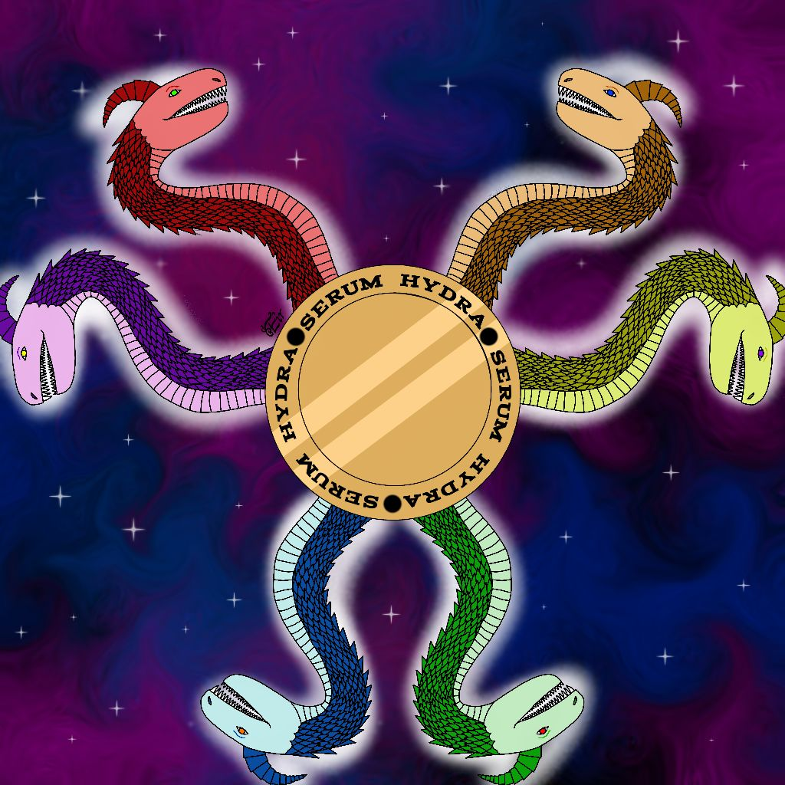

Home
Projects
Twitch
SerumHydra
Part time content creator and coder
Hiya! My name's Hydra, or Serum, I'm a small content creator from the SE (south east) of the UK and I stream a variety of games, such as Minecraft, Five Nights at Freddy's and other horror games.